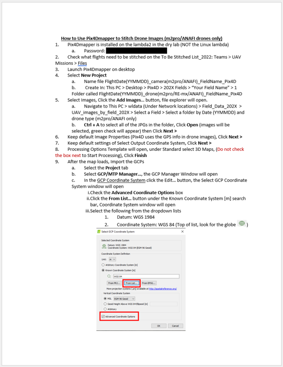
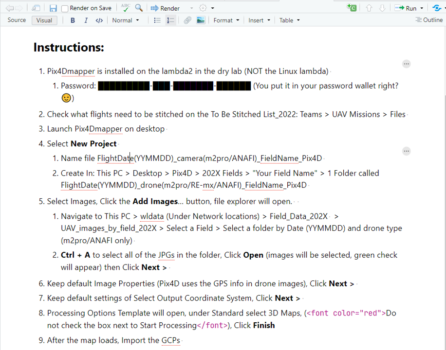
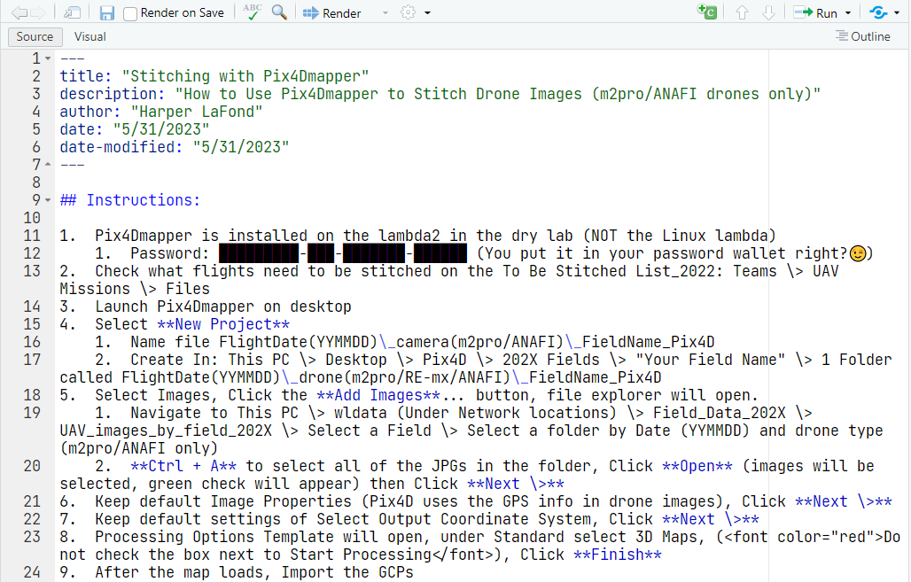

Authoring Protocols
Authoring and editing protocols is meant to be easy an accessible. There’s no wrong way to do it so long as you send documentation of the what you want added to a lab member with access to the website. That being said, the form of this documentation falls in different “levels” and the higher the level the faster you’re work will be accessible to everyone 😃. If you send a document it will go through each of these levels before being posted.
Level 1: Word Document

Here’s an example protocol. It has clearly written steps, useful images, and an informative title. This is a great start!
Level 2: Word Document, Images on the side
Before a protocol can become a webpage the pictures need to be removed. Unlike a word document which contains the pictures within it, the Quarto documents for this site contain links to the images. For instance, the picture above is  under the hood.
The steps to go from Level 1 to Level 2 are:
- Save each of the images that were in the document
- A handy trick for this is to copy the picture you want from word to powerpoint. Then you can right click and select “Save as Picture” to get the file.
- If you want annotations (like the red boxes above) you can also do that in powerpoint. Select the image and annotations, right click and select “Group”. Then you can save the whole group as a picture.
- In the place of a picture type
so it’s clear where each picture belongs.- Picture names can be descriptive (“StitchProtocolPage1.png”) or numbered (“Picture1.png”).
Level 3: Quarto Document, Images on the side, in a Zipped Folder
When your protocol is at this level, it’s basically ready for the the website. The big change here is that the protocol is stored in as a “Quarto Markdown File”. Once you’ve completed these steps submit a request to get your 💻🧙 badge.
By the end you’ll have a folder with a Quarto file (index.qmd) and several images. The protocol shown above (Stitching Images with Pix4Dmapper), started as a folder called “Pix4Dmapper_Stitch” that looks like this:

Open RStudio and create a new Quarto Document.

You’ll see a pop up like this. You can title it now or handle that later.

RStudio has two visualizing options. Visual and Source. Both are useful but I’d recommend using Visual most of the time.
Visual:

Source:
The
won’t be treated properly if it’s pasted in while RStudio is in “Visual” mode. You can switch into “Source” to correct this or click on the small image icon by “Format” to insert an image.There’s the stitching protocol after I converted it to a Quarto document. One thing to notice is that font color takes some effort. The text that was red in the word document is surrounded by
<font color="red">and</font>. When this page is converted into html this will be processed and show up nicely (but not until then).Visual:

Source:
Save your file as
index.qmdin the same folder as the images for the file.Finally, zip this folder and send it to be added to the site!